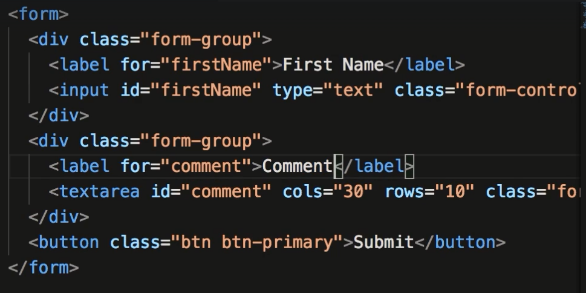
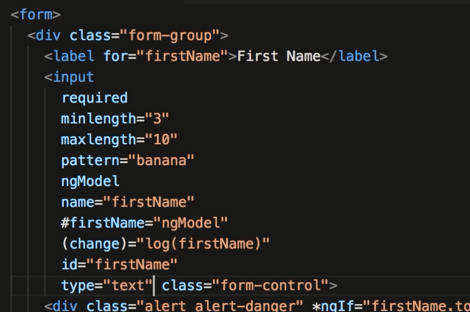
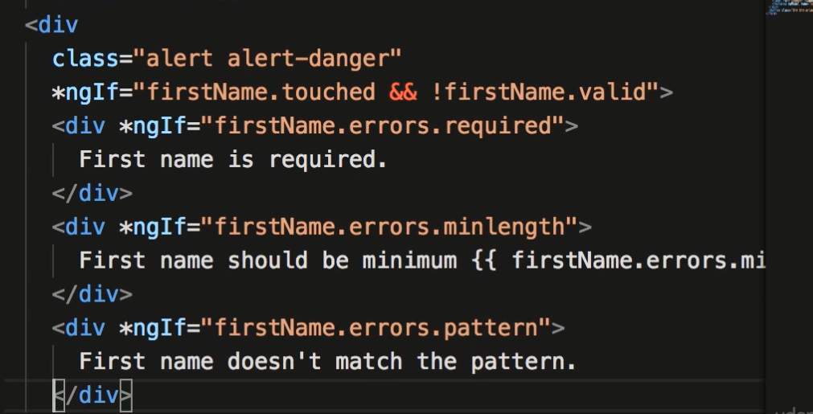
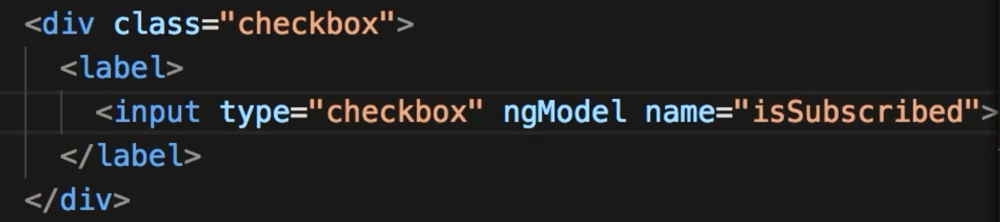
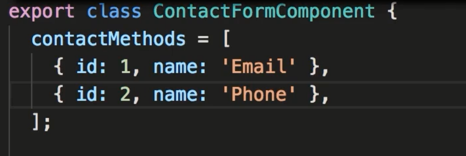
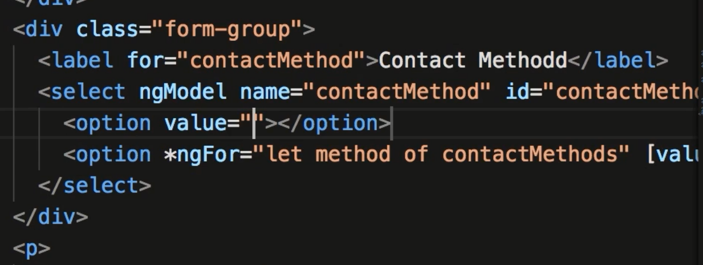
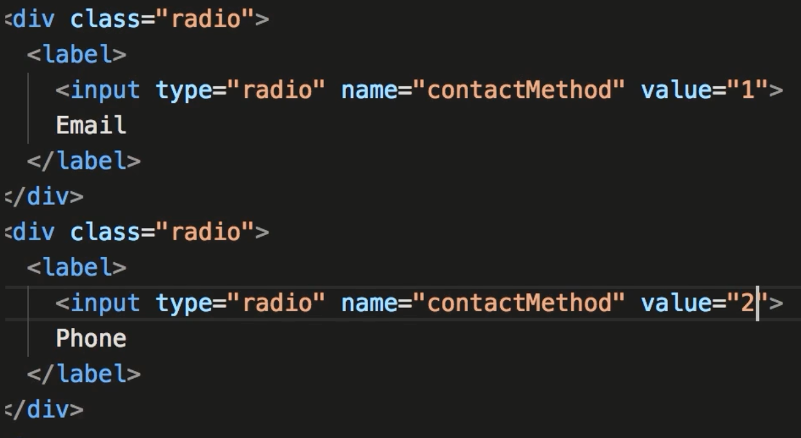
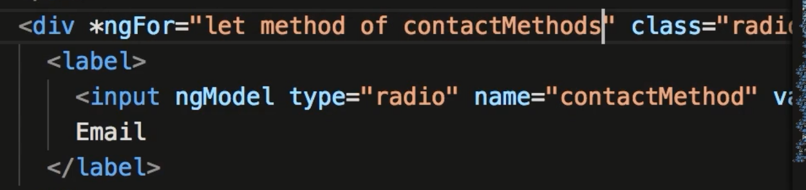
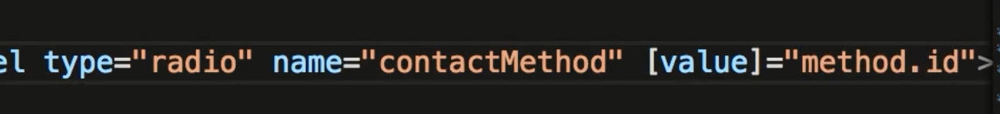

Section 7. Template Driven Forms
76. Building a Bootstrap Form
- Build a basic bootstrap form.

77. Types of Forms
- Angular has a class called FormControl. Allows us to see values, status such as touched, untouched, dirty, pristine, valid and errors
- There are also FormGroups. Has similar values available. There is always at least one formgroup and one formcontrol
- The formgroup has the valid value and can tell if all formcontrol members are valid. This would be a better place to check if the form is valid.
- There are 2 ways to create controls. Template-driven (directives) and Reactive (code).
- The difference is: Reactive give more control over validation, is good for complex forms
- Template are simpler , easer to create
78 ngModel.
- The template driven forms uses ngModel. Apply ngModel to the input field. Using ngModel creates a control object under the hood..
- ngModel requires the name attribute. This is the way it distinquishes this specifice control.
- To see what ngModel creates put this in the input tag.
- input ngModel name="firstname" #firstName="ngModel" (change)="log(firstName)" Create a log method that console logs ngModel
- You should see the ngModel object. It has such values as control: which is FormControl. Others such as dirty dissabled etc.
79. Adding Validation
- To test if a field is valid you can check if the input field temp variable is valid (ie: firstName.valid). You can create a div that will display @ngIf="!firstName.valid". This will display this dive if the input field is not valid.
- You should also check if the field is touched AND not valid to avoid seeing the warning message before the user has typed.
80. Specific Validation Errors
- There are a few basic validators based on html5 such as minlength, maxlength, pattern. You should have multiple validation errors for each type of potential error.
- You can *ngIf against "firstName.errors.required if this is required error.
81. Styling Invalid Input Fields
- You can style the input field using classes that Angular adds if a tag is invalid. You can create a css style based on class .form-control.ng-touched.ng-invalid
82. Cleaner Templates
- You should write code so that everything can see everything without scrolling.


83. ngForm
- Angular by default will add an ngForm directive to a form tag. You can overwrite by adding an ngNoForm directive..(see angular documentation.)
- Add a template variable to the form tag. #f= ngForm. It outputs an event called ngSubmit.
- To see what ngForm outputs you can listen for the ngSubmit event that ngForm outputs.
- Type: form #f="ngForm" (ngSubmit)="submit(f)";. Create a submit function in the component to view this output.
- This will show similar values as the formcontrol. You can use these values to test if the form as a whole is valid, you can also send the contents of the value field (which should be an object to a backend API.
84. ngModelGroup
- You can use the ngModelGroup directive if your form has a complex structure. You can use the same technique to see the values of ngModelGroup. May be important if your API is expecting a complex json value.
85. Control Classes and Directives
- This topic just reviewed the differences between formControl, which is created when you use the ngModel. ngForm is create when you have a form tag.
- The difference between ngForm and ngModelGroup is ngForm has the output ngSubmit.
86. Disabling the Submit Button
- To disable the submit until the whole form is valid you can bind to the form temp variable ( you created f above.)
- To do this type: button class="btn btn-primary" [disabled]="!f.valid"
87. Working with Check Boxes
-

- A way to see values of your forms you can interpolate f.value and pipe to json. This will show you the values of your form.
88. working with Drop-Down Lists
- Drop downs generally get populated from a dynamic source. The example below uses an array but the principle would be the same.
- Here the component is called and the array values fill the options of the dropdown.

- The typed content missing on the line with *ngFor has [value]="method.id and the value shown to the user is in double curly: method.name

- The value store in f.value would have the .id value of the dropdown (ie: 1 or 2 etc). If you want both the id and the name you can use [ngValue] and have that equal to method in the above example.
- Also: in the select tag you can add the keyword multiple if you want the user to have the ability to select multiple items. If so the value of .id will be an array.
89. working with Radio Buttons.
- Below example is a way to create Radio button. First image is the hard coded method

- The second image uses ngFor to dynamically add data.

- Note: Instead of hard coding email in above image you would use Interpolation and use method.name

Assignment: Course Form
- Create a form that has an input Course name (required 5 characters) and a dropdown that is required
- and a checkbox with the label 30-day money-back guarantee (optional).